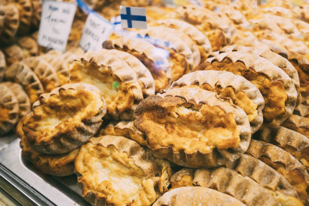

Home
Karjalanpiirakka

Description
Karelian pasties, Karelian pies or Karelian pirogs
are traditional pasties or pirogs originating from the region of Karelia. They are eaten throughout
Finland as well as in adjacent areas such as Estonia and northern Russia.
The oldest traditional pasties usually had a rye crust, but the North Karelian and Ladoga Karelian
variants also contained wheat to improve the baking characteristics. The common fillings were barley
and talkkuna. In the 19th century, first potato and buckwheat were introduced as fillings, and later also
rice and millet.
Today, the most familiar and common version has a thin rye crust with a filling of rice. Mashed potato and
rice-and-carrot fillings are also commonly available. Butter, often mixed with chopped-up boiled egg
(egg butter or munavoi), is spread over the hot pasties before eating.
Ingredients
- 300 milliliters water
- 2 1/2 cups short grain rice (rinsed - I use arborio rice)
- 1 liter milk
- 2 tablespoons butter
- 1 teaspoon salt
- 300 milliliters water
- 250 grams rye flour (plus more for dusting)
- 1 teaspoon salt
- 50 grams butter
- 4 teaspoons milk
- 6 eggs (hard boiled)
- 4 tablespoons butter
Steps
Rice Filling
- Rinse the rice till the water runs clear.
- Bring the water and rice to the boil and cook for 5 minutes, stirring to ensure it doesn't stick to the bottom of the pot.
- Add the milk and cook on a low simmer for 45 minutes.
- Stir in the butter and salt after the 45 minutes and then leave aside to cool.
Bread
- Mix the flour and salt into the water then knead lightly to bring together and make a smooth dough.
- Roll into a log and then divide the dough in equal portions, flatten each section to make a round disk. Cover the disks with tea towel to avoid drying.
- Roll each disk into a paper thin round - ideally try to get it oval shape.
- Once the rounds are ready for the filling, pre heat your oven to 225 degree c / 440 degrees f
- Place 1-2 tablespoons of rice filling onto the dough, then fold up the sides pinching to create a crimped edge as you go.
- Place the pies on lined baking trays and bake in a preheated oven for about 15 minutes or until the tops are slightly browned.
Return to Top